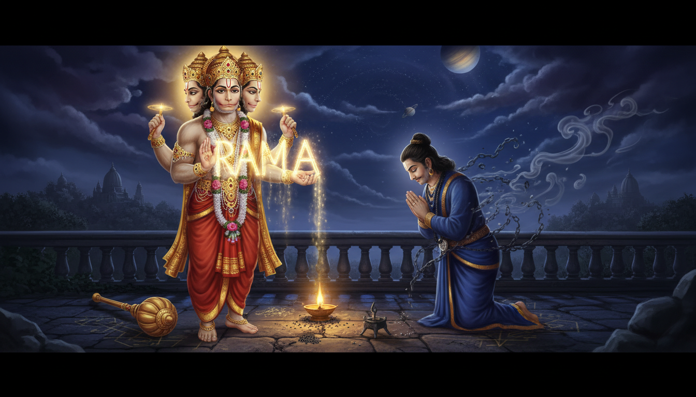

जब शनि का दबाव जीवन में आता है, तो अधिकतर लोग केवल विलंब, भय, थकावट और बार-बार परीक्षा देखते हैं। वैदिक परंपरा इसी दबाव का उत्तर एक अद्भुत चित्र से देती है: राम के परम भक्त हनुमान, जिनकी शक्ति के आगे कर्म के ग्रह शनि भी सहायक बन जाते हैं।

यह कथा किसी युद्ध की विजय नहीं है। यह आंतरिक गुरुत्व की विजय है। शनि धीमे चलते हैं, क्योंकि समय, परिणाम और न्याय को जल्दी नहीं मिलती। हनुमान निर्भय चलते हैं, क्योंकि भक्ति मन को साहस देती है। जब ये दो शक्तियाँ मिलती हैं, तो विलंब अनुशासन बन जाता है, भय उत्तरदायित्व बन जाता है और कर्म काम बन जाता है।
वैदिक घड़ी ऐप के लिए यह कथा एक सर्वांगपूर्ण उपाय-प्रणाली है। इसमें राम भक्ति, हनुमान आराधना, शनि उपाय, साढ़े साती की राहत, पंचमुखी हनुमान साधना, वायु प्राण अभ्यास, आयुर्वेदिक वात संतुलन, गूढ़ रक्षा अनुष्ठान और कर्म दर्शन एक साथ जुड़ते हैं। यदि आप किसी कठिन शनि काल से गुजर रहे हैं, तो यह कथा आपसे भाग्य से लड़ने को नहीं कहती। यह कहती है: इतने स्थिर बनिए कि भाग्य आपको डराने के बजाय सिखाने लगे।
1. कथा: हनुमान ने लंका में शनि को कैद से कैसे मुक्त किया
एक प्रसिद्ध पौराणिक कथा कहती है कि रावण ने अपने महत्वकांक्षा को शनि के प्रभाव से बचाने के लिए शनि देव को लंका में बंदी बना रखा था। सीता जी की खोज के समय हनुमान लंका में प्रवेश करते हैं और अंधकार में बंद शनि को देखते हैं।
हनुमान उन बंधनों को तोड़ते हैं और शनि को कंधों पर बिठाकर बाहर ले आते हैं। मुक्त होकर शनि हनुमान से वरदान मांगने को कहते हैं। हनुमान धन, विजय या राज्य नहीं मांगते। वे कहते हैं कि जो लोग उन्हें सच्ची भक्ति से स्मरण करें, शनि उनकी रक्षा करें।
शनि इसे स्वीकार करते हैं। इसके बाद शनि की कठोरता समाप्त नहीं होती, लेकिन उनका संबंध बदल जाता है। जो लोग धर्म के लिए कार्य करते हैं और हनुमान को स्मरण करते हैं, उन्हें कर्म से मुक्ति नहीं मिलती; उन्हें कर्म सुधारने के समय में सहारा मिलता है।
यही पहला उपाय है। शनि आपको भय से बांध सकते हैं, या वे आपको संरचना से सिखा सकते हैं। राम भक्ति दूसरा मार्ग चुनती है।
2. शनि राम भक्ति का सम्मान क्यों करते हैं
शनि का संबंध समय, न्याय, श्रम, सीमा, वृद्धजन, लोहा, दीर्घायु और पूर्व कर्म के परिणाम से जोड़ा जाता है। उनका कार्य असहज लगता है, क्योंकि वे जीवन से शॉर्टकट हटाते हैं।
हनुमान उस शक्ति के प्रतीक हैं जो पूरी तरह पवित्र उद्देश्य को समर्पित हो जाती है। ज्योतिषीय प्रतीकों में उन्हें प्रायः मंगल से जोड़ा जाता है, जो साहस, ऊर्जा और पहल करने की शक्ति देता है। वे वायु पुत्र भी हैं, इसलिए प्राण और नाड़ी बल से भी जुड़े हैं।
इससे हनुमान-शनि युग्म अद्भुत बन जाता है:
- शनि भार देते हैं; हनुमान उसे उठाने की शक्ति देते हैं।
- शनि कर्म दिखाते हैं; हनुमान उसका सामना करने का साहस देते हैं।
- शनि धैर्य सिखाते हैं; हनुमान त्राण देते हैं।
- शनि अनुशासन परखते हैं; हनुमान दिनचर्या मजबूत बनाते हैं।
- शनि अहंकार को नम्र करते हैं; हनुमान उस अहंकार को राम में समर्पित कर देते हैं।
व्यावहारिक उपाय ज्योतिष में साढ़े साती, शनि दोष, शनि दशा, कठिन गोचर, करियर में रुकावट, विवाद, दीर्घ भय या लगातार उत्तरदायित्व से थके लोगों को शनिवार को हनुमान आराधना का परामर्श दिया जाता है। इसका तर्क यह नहीं कि हनुमान शनि को रद्द कर देते हैं। तर्क यह है कि हनुमान मन और शरीर को इतना बल देते हैं कि शनि काल बिना टूटे पार हो सके।
3. 2026 का शनि गोचर: मीन राशि में दबाव और अवसर
व्यापक रूप से प्रचलित वैदिक गोचर गणना के अनुसार शनि वर्ष 2026 में मीन राशि में बने रहते हैं। मीन जल तत्व का, भावुक और आध्यात्मिक राशि है। शनि का यहाँ प्रभाव सीमाओं को भारी बना सकता है: नींद बिगड़ सकती है, पुराने भय लौट सकते हैं, भावनाएँ सतह पर आ सकती हैं और अधूरे कर्म ध्यान मांग सकते हैं।
फिर भी यही समय आध्यात्मिक परिपक्वता का उत्तम अवसर है। मीन में शनि उनसे प्रसन्न होते हैं जो भावना को अभ्यास में बदलते हैं:
- देर रात की चिंता के बजाय नियमित नींद,
- अंतहीन पछतावे के बजाय एक सच्चा सुधार,
- वृद्ध, श्रमिक या रोगी की सेवा,
- नाटकीय भय के बजाय नियमित मंत्र,
- खान, मोबाइल, समय और विषाक्त सलाह के लिए सीमाएँ।
हनुमान इस गोचर के लिए सर्वोत्तम देवता हैं, क्योंकि वे जल जैसी भारी अवस्था में अग्नि, प्राण और साहस भर देते हैं। वे तूफान से इनकार नहीं करते। वे मौसम बदलते समय रीढ़ को स्थिर रखना सिखाते हैं।
4. पंचमुखी हनुमान: रक्षा के पाँच मुख
पंचमुखी हनुमान पाँच मुखों वाला रक्षात्मक रूप है, जिसकी उपासना प्रचलित और गूढ़ परंपराओं दोनों में मिलती है। सामान्य विन्यास इस प्रकार है:
- पूर्व: हनुमान, जो साहस देते हैं और भय हटाते हैं।
- दक्षिण: नृसिंह, जो विनाशक भय और छिपे शत्रु से रक्षा करते हैं।
- पश्चिम: गरुड़, जो सर्प जैसी उलझन और विष कर्म से मुक्ति देते हैं।
- उत्तर: वराह, जो प्रलय के बाद स्थिरता लौटाते हैं।
- ऊपर: हयग्रीव, जो ज्ञान, मंत्र और वाणी को प्रकाशित करते हैं।
साथ मिलकर ये पाँच मुख एक पूर्ण कवच बनाते हैं: शरीर, भावना, कर्म, स्थिरता और बुद्धि।
शनि की कठिनाई में जब आप इस रूप का ध्यान करते हैं, तो आप बाहरी अस्त्र की कल्पना नहीं करते। आप अपने भीतर की शक्तियों को व्यवस्थित करते हैं। वह मन जिसमें साहस, विवेक, विनम्रता, स्थिरता और भक्ति एक साथ कार्य करें, उसे भय आसानी से शासित नहीं कर सकता।
5. शनिवार के हनुमान-शनि अनुष्ठान
ये गृह-उपयोगी अभ्यास हैं। अपने स्वास्थ्य, पारिवारिक परंपरा और योग्य गुरु के निर्देश के अनुसार उन्हें बदलिए।
1. शनिवार हनुमान दीप
शनिवार संध्या को संभव हो तो हनुमान मंदिर जाएँ, अन्यथा घर की हनुमान प्रतिमा के सामने सरसों के तेल का छोटा दीप जलाएँ। गेंदा या जूही अर्पित करें और हनुमान चालीसा का एक पाठ करें।
दीप के सामने मन में कहें:
शनि मेरे लिए आतंक नहीं, शिक्षक बनें।
दीप सुरक्षित रूप से जलने दें, फिर वह कार्य शुरू करें जिसे आप टाल रहे थे।
2. सुंदरकांड पाठ
सुंदरकांड में हनुमान समुद्र लांघते हैं, लंका में प्रवेश करते हैं और सीता जी के छप्पर देकर वापस आते हैं। यह शनि उपायों में अत्यंत प्रिय है, क्योंकि यह उस सेवक की कथा है जो असंभव कार्य को अहंकार के बिना पूरा करता है।
पूरा पाठ लंबा लगे तो प्रत्येक शनिवार एक सर्ग पढ़ें। इसका प्रभाव तब बढ़ता है जब पाठ के बाद एक ठोस कदम उठाया जाए: फोन, क्षमा-याचना, चिकित्सा अपॉइंटमेंट, कठिन पत्र या एक घंटा ईमानदार कार्य।
3. काले तिल अर्पण
शनिवार को काले तिल अर्पित या दान करें। चावल के साथ थोड़े तिल मिलाकर मंदिर में अर्पित कर सकते हैं, अथवा तिल से बना भोजन जरूरतमंद को दे सकते हैं।
प्रतीक रूप में तिल छोटे, गहरे और घने होते हैं, ठीक वैसे जैसे शनि के संकुचित पाठ। इसे रिश्वत मानकर न करें। अर्पण के समय कहें: "मेरी कठिनाई किसी और का पोषण बने।"
4. लोहा और सेवा
शनि का संबंध लोहे और श्रम से है। परंपरागत उपाय लोहे का दान या श्रमिक, सुरक्षाकर्मी, सफाईकर्मी, चालक, किसान, वृद्ध या रोगी की सेवा माना जाता है।
भय से कोई वस्तु खरीदने से बड़ा उपाय यह है कि आप शनि का असली पाठ समझें: श्रम का सम्मान और बोझ उठाने वालों के प्रति उत्तरदायित्व।
5. पीपल या वट दीप
शनिवार संध्या को यदि परंपरा अनुमति दे, तो पीपल या वट वृक्ष के नीचे सरसों के तेल का दीप अर्पित करें। शनि से जुड़े वृक्ष धैर्य का प्रतीक हैं: जड़ें पहले नीचे जाती हैं, शाखाएँ फिर ऊपर फैलती हैं।
वृक्ष या उसके परिवेश को न छेड़ें। अर्पित करें, आभार व्यक्त करें और शांति से लौट आएँ।
6. शनि प्रदोष भाव
जब प्रदोष शनिवार को आता है, तो भक्त शिव स्मरण का हल्का अनुष्ठान करते हैं। शनि का संबंध शिव के धैर्यपूर्ण न्याय से भी जोड़ा जाता है। केवल दस मिनट का मौन, जल अर्पण या ॐ नमः शिवाय मन को स्थिर कर सकता है।
हनुमान भक्ति और शिव स्मरण विरोधी नहीं हैं। दोनों निर्भय धैर्य सिखाते हैं।
6. वायु प्राण साधना: हनुमान की श्वास तकनीक
हनुमान वायु पुत्र हैं, इसलिए उनकी साधना में प्राण और श्वास अत्यंत महत्वपूर्ण हैं। शनि की भारी अवस्था प्रायः उथली साँस, कसे कंधे, ठंडे हाथ, बेचैन नींद और पहल करने की शक्ति के ह्रास के रूप में दिखती है। एक छोटा वायु अभ्यास नाड़ी अवस्था बदल सकता है।
वायु कवच श्वास
- रीढ़ सीधी रखकर आँखें बंद करें।
- नाक से चार गिनती में धीरे से श्वास लें।
- दो गिनती तक सहज रुकें।
- छह गिनती में नाक से श्वास छोड़ें।
- कल्पना करें कि गर्म सुनहरी श्वास नाभि से कंधों, बाहों और पैरों तक जा रही है।
- ग्यारह चक्र दोहराएँ।
- फिर ॐ हनुमते नमः ग्यारह बार जपें।
इसे कठिन बातचीत, विवाद, कार्यालय की बैठक, चिकित्सा भ्रमण या बेचैन रात से पहले करें।
श्वास पर बल न डालें। यदि श्वसन रोग, हृदय रोग, गर्भावस्था या पैनिक विकार है, तो अभ्यास अत्यंत सहज रखें और योग्य चिकित्सक से परामर्श लें।
7. हनुमान-शनि विजय का गूढ़ आंतरिक अभ्यास
गूढ़ अभ्यास का अर्थ खतरनाक अंधविश्वास नहीं है। यहाँ इसका अर्थ है, रक्षात्मक प्रतीकों के भीतर छिपी भाव-तकनीक।
1. पंचमुखी यंत्र ध्यान
मन में कागज पर एक पाँच कोण वाला तारा बनाएँ, अथवा पंचमुखी हनुमान का सरल चित्र सामने रखें। कल्पना करें कि प्रत्येक मुख एक दिशा की रक्षा कर रहा है और आपके हृदय में राम नाम स्थिर है। केंद्र में कोई प्रेत नहीं, आपका चुना हुआ कर्तव्य है।
2. शनि बंधन मुक्ति
एक बार-बार लौटता विलंब लिखें। नीचे लिखें कि आज आप उसका कौन-सा छोटा कदम पूरा कर सकते हैं। कागज मोड़कर पूजा स्थल पर रखें। प्रत्येक पूर्ण कार्य एक मानसिक गाँठ खोलता है।
3. लौह दर्पण
अपने कार्यस्थल पर एक साफ लोहे की छोटी वस्तु रखें। यह याद दिलाए कि लोहा आग और दबाव के बाद ही उपयोगी बनता है। यह भाग्य की ताबीज़ नहीं, धैर्य का प्रतीक है।
4. काले तिल क्षमा
कुछ काले तिल हाथ में लें। मन में एक दुखाव का नाम लें। कहें: "मैं विष छोड़ता हूँ, पाठ नहीं भूलता।" फिर स्थानीय परंपरा के अनुसार उन्हें बहते जल, मंदिर या भूमि में अर्पित करें।
5. हनुमान कवच नारियल
कुछ घर हनुमान के चित्र के पास सिंदूर और तेल लगाए नारियल को कवच के रूप में रखते हैं। यदि आप यह परंपरा मानते हैं, तो नारियल को स्वच्छ और सम्मानपूर्वक रखें तथा पारिवारिक परंपरा अनुसार उसे बदलते रहें।
वास्तविक कवच आपका अनुशासन है: नींद, भोजन, कार्य, सत्य और स्मरण।
6. शनि घड़ी अभ्यास
प्रत्येक घंटे में एक बार तीन श्वास के लिए रुकें। केवल एक प्रश्न पूछें: "अभी क्या अपेक्षित है?" यह मन को समय से लड़ना छोड़कर समय का उपयोग करना सिखाता है।
7. बजरंग बाण की सावधानी
बजरंग बाण अत्यंत शक्तिशाली हनुमान पाठ है, जिसे परंपरा में तीव्र रक्षा के लिए याद किया जाता है। इसकी तीव्रता के कारण इसे बिना विचार, आक्रोश या दिखावे के नहीं पढ़ना चाहिए। यदि आप इसका चुनाव करें, तो अनुभवी मार्गदर्शन, शांत मन और शुद्ध भाव आवश्यक है।
अधिकांश साधकों के लिए हनुमान चालीसा, सुंदरकांड, जप, सेवा और वायु श्वास पर्याप्त तथा अधिक सुरक्षित हैं।
8. शनि दबाव और वात संतुलन का आयुर्वेद
आयुर्वेद में शनि की भारी अवस्था प्रायः वात प्रकोप जैसी प्रतीत होती है: चिंता, शुष्कता, ठंड, अनिद्रा, जोड़ों की जकड़न, अनियमित दिनचर्या और नाड़ी तंत्र की थकान।
सहायक दिनचर्या में शामिल करें:
- नियमित समय पर गर्म, ताजा रसोई का भोजन,
- पैरों और सिर के लिए तिल तेल या उपयुक्त तैलाभ्यंग,
- गुनगुना जल, यथासंभव अदरक, तथा ठंडा, शुष्क और अति प्रसंस्कृत भोजन की न्यूनता,
- रात ग्यारह बजे से पहले नींद,
- चलना, सूर्य नमस्कार या सरल योग जैसा सौम्य बल अभ्यास,
- अश्वगंधा, ब्राह्मी, बला या शंखपुष्पी केवल योग्य आयुर्वेद वैद्य के परामर्श से।
यदि अवसाद, आतंक, पुराना दर्द, रक्तचाप, थायरॉइड, निद्रा विकार या कोई चिकित्सीय स्थिति है, तो डॉक्टर और योग्य आयुर्वेद वैद्य दोनों से परामर्श लें। अनुष्ठान क्षेत्र को सहारा देता है, निदान और उपचार का विकल्प नहीं बनता।
9. दर्शन: पहले कार्य, बाद में भय
हनुमान की महत्ता यह नहीं कि उन्होंने कभी खतरा नहीं देखा। उन्होंने खतरा देखा और फिर भी कहा, "मैं राम का दास हूँ।"
शनि केवल दंड देने वाले नहीं हैं। शनि वह नियम हैं जिसके अंतर्गत कर्म पकता है। इस नियम को स्वीकार करते ही जीवन कम व्यक्तिगत और अधिक कार्य-साध्य हो जाता है। आप पूछना छोड़ते हैं, "यह मेरे साथ ही क्यों?" और पूछना शुरू करते हैं, "यहाँ क्या सुधारा जा रहा है?"
राम भक्ति इस शिक्षा को पूर्ण करती है। भक्ति कर्म से भागने का द्वार नहीं है। भक्ति वह साहस है जिससे कर्म का सामना अहंकार के बिना होता है।
यही प्रभुत्व है:
- भय से पहले कार्य करें,
- परिणाम मांगने से पहले समय का सम्मान करें,
- ग्रह से डरने से पहले बोझ उठाने वालों की सेवा करें,
- रक्षा मांगने से पहले अहंकार समर्पित करें,
- और हर विलंब को धीमी गति से गहरी शक्ति बनने दें।
10. 41 दिन की हनुमान-शनि साधना
यह आधुनिक अनुकूलन साढ़े साती, शनि दशा, कठिन गोचर, करियर दबाव, भय, विवाद या थकान के काल में किया जा सकता है। स्वास्थ्य और मार्गदर्शन के अनुसार इसे बदलें।
दिन 1 से 7: क्षेत्र में प्रवेश
- जागने और सोने का समय नियत करें।
- ॐ हनुमते नमः 27 बार जपें।
- सुंदरकांड का एक छोटा भाग पढ़ें।
- जिसे टाल रहे थे, उसे पूरा करें।
- सुरक्षित हो तो शनिवार सरसों के तेल का दीप जलाएँ।
दिन 8 से 14: शरीर को बल दें
- एक गर्म भोजन नियत समय पर करें।
- उपयुक्त तेल से पैरों की मालिश करें।
- ग्यारह चक्र वायु कवच श्वास करें।
- देर रात स्क्रीन, अति कैफीन, चुगली या उग्र क्रोध में से एक दुर्बल आदत छोड़ें।
- एक श्रमिक या वृद्ध व्यक्ति की सहायता करें।
दिन 15 से 21: कर्म की शुद्धि
- शनिवार को काले तिल या सेवा अर्पित करें।
- एक अधूरी जिम्मेदारी लिखें और एक कदम पूरा करें।
- पाँच मिनट क्षमा ध्यान करें।
- शनिवार हनुमान चालीसा पढ़ें।
- एक कठिन सत्य सौम्य भाषा में कहें।
दिन 22 से 30: पाँच मुखों का आह्वान
- प्रतिदिन पाँच मिनट पंचमुखी हनुमान का ध्यान करें।
- ॐ श्री हनुमते नमः 27 बार जपें।
- नृसिंह से साहस, गरुड़ से मुक्ति, वराह से स्थिरता और हयग्रीव से स्पष्टता मांगें।
- नींद, भोजन, कार्य या मानसिक शांति की एक सीमा रक्षित करें।
- वायु श्वास जारी रखें।
दिन 31 से 40: रक्षा को व्यावहारिक बनाएँ
- रोगी, वृद्ध, श्रमिक या पशु-पक्षी की सेवा करें।
- विलंब, विवाद, शोक या अकेलेपन से जूझते किसी व्यक्ति को सहारा दें।
- लिखी हुई जिम्मेदारी संभव हो तो पूरी करें।
- मेज पर स्वच्छ लौह वस्तु धैर्य के प्रतीक रूप में रखें।
- क्षमता अनुसार दान करें: भोजन, तिल, कंबल, समय या मार्गदर्शन।
दिन 41: पूर्णाहुति
- हनुमान चालीसा का एक पाठ करें।
- किसी वृक्ष या पौधे को जल अर्पित करें।
- शनि को समय के शिक्षक मानकर आभार व्यक्त करें।
- हनुमान को शरीर के साहस मानकर आभार व्यक्त करें।
- एक वाक्य लिखें: "मैं इस ऋतु से नहीं भागा।"
11. निष्कर्ष: शनि सिखाएँ, हनुमान उठाएँ
हनुमान और शनि की कथा हर व्याकुल भक्त को जीने के लिए एक श्रेष्ठ वाक्य देती है। शनि आपसे छोटे नहीं होने को कहते हैं। शनि आपसे धीमे, सत्यनिष्ठ और अधिक उत्तरदायी बनने को कहते हैं।
जब बोझ असह्य लगे, तो भय के आगे मत झुकिए। राम के आगे झुकिए। फिर हनुमान की भाँति जो उठाया जा सकता है उठाइए, जो मुक्त हो सकता है मुक्त कीजिए, समय चलते रहे तो कार्य कीजिए और कर्म को अपना शिक्षक बनने दीजिए।
हनुमान ने शनि पर यही प्रभुत्व स्थापित किया: समय से घृणा करके नहीं, बल्कि हर क्षण को धर्म का सेवक बनाकर।
Sources
- Hanuman and Shani Dev - Hindu Blog
- Hanuman and Shani Ji Parables - Sushmajee
- Shanivar Vrat And Its Significance - Shubhdarshika
- Hanuman, Mars, Saturn And Devotion - Paramarsh
- Hanuman Chalisa Remedies For Sade Sati - Times of India
- Sri Panchamukhi Hanuman Temple
- Panchamukhi Hanuman - Wikipedia
- Panchamukha Archana - Ramanuja.org
- Valmiki Ramayana, Sundara Kanda, Sarga 1
- Sundarakanda Audio And Meaning
- Hanuman Chalisa - Sacred Texts
- Saturn In Vedic Astrology - Drik Panchang
- Saturn Transit In Pisces 2026 - Astropedia
- Ayurvedic Medicine: An Overview - NCCIH
- Ashwagandha - NCCIH
- Caraka Samhita Online - NIIMH